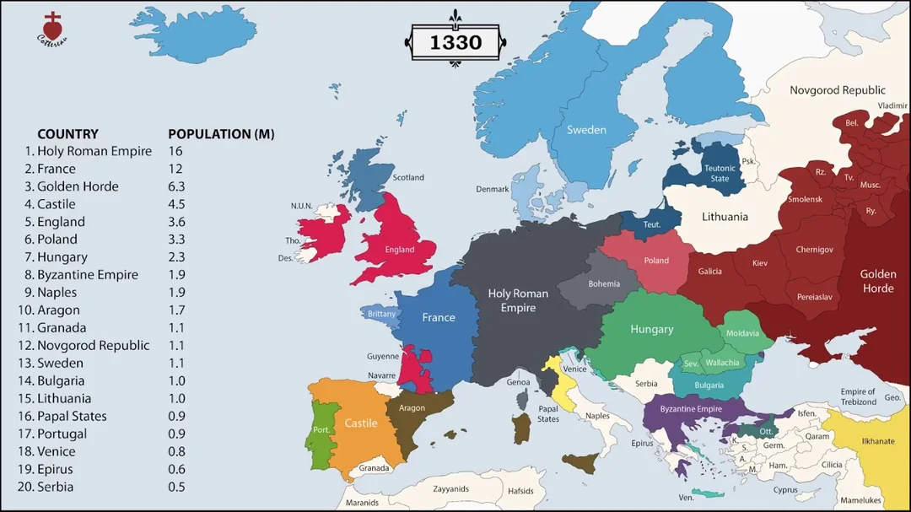

Harita · 1330
Avrupa · 1330
Oyun bu gerçek tarih haritasının alternatifinde geçer. Harita sabit; üzerine çiz / sil.

1330 Avrupa. Nüfus listesi ve siyasi sınırlar haritada. Çizim katmanı ayrıdır.
Oyun bu gerçek tarih haritasının alternatifinde geçer. Harita sabit; üzerine çiz / sil.
